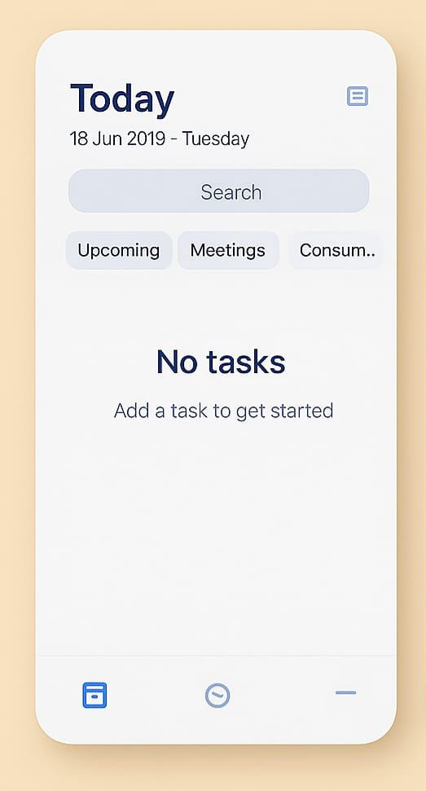
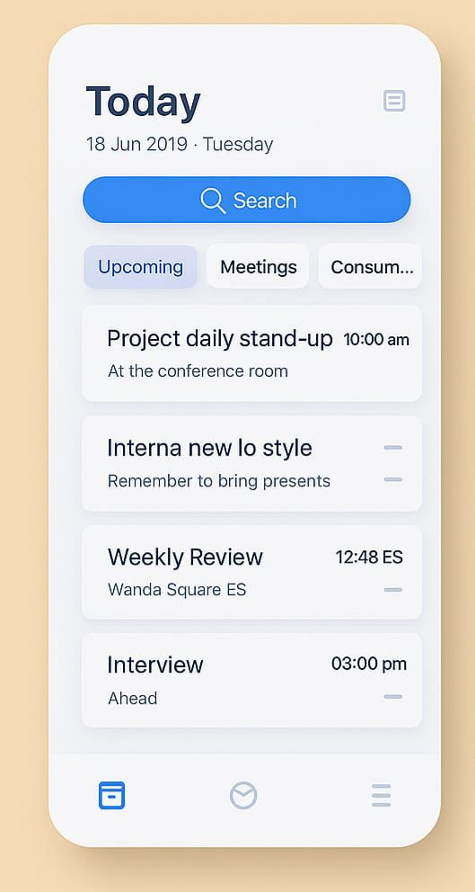

To-Do List App
Add, edit, delete & persist tasks in your browser
Overview
A simple, interactive To-Do list built with vanilla JavaScript.
Users can add new tasks, mark them as complete, edit or delete existing tasks.
All data is stored in localStorage so your list remains even after you close the tab.
Screenshots
 Technologies Used
- HTML5 & CSS3
- Vanilla JavaScript (ES6+)
localStoragefor data persistence- Accessible focus management for keyboard users